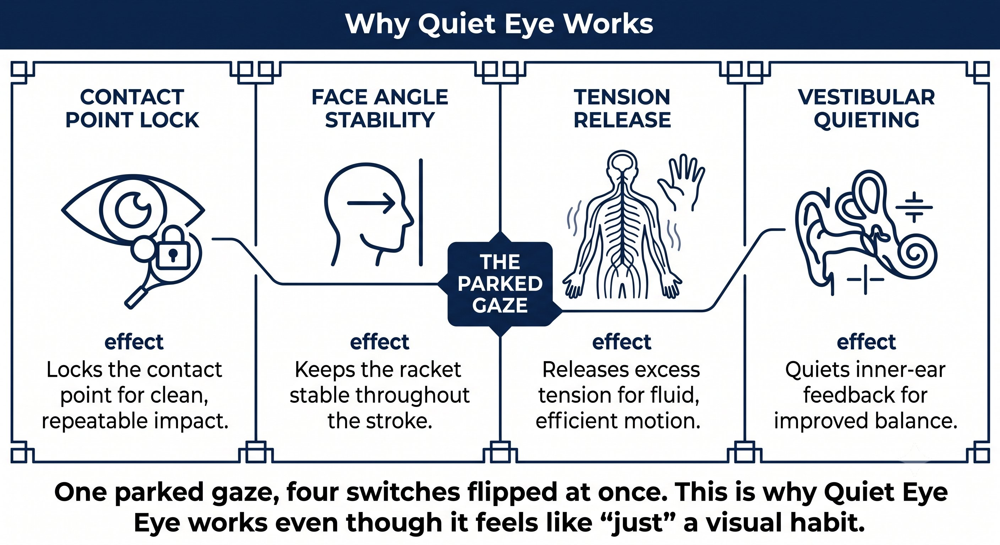
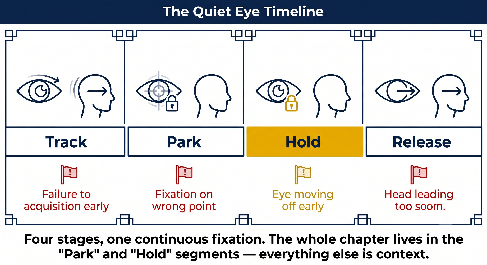
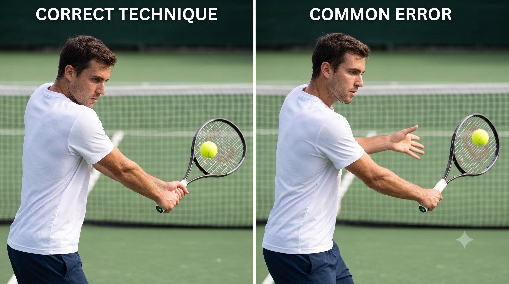
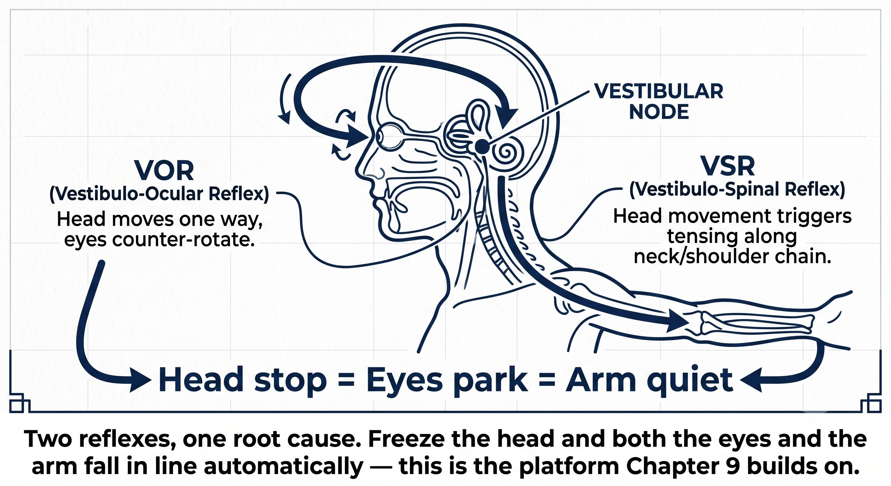

Chapter 8: Quiet Eye
(English version of Chapter 8 in the United Tennis Handbook)
CHAPTER 8

Figure 1
QUIET EYE
The Visual Anchor (Q)
Your eyes don't track the ball. They park where contact will be.
Quiet Eye is not "watch the ball." It is a long, stable fixation on the contact zone before the racket arrives.
— Henry Pham
What Quiet Eye Actually Is
Research by Joan Vickers at the University of Calgary, and the studies that followed it, established a precise definition:
– Quiet Eye is a final fixation on a specific location — the contact zone — that begins before the forward swing and continues through contact.
– Duration: elite players hold it for 300 to 500 milliseconds; club players, only 100 to 200.
– Onset: it has to begin before the forward swing starts, typically at the opponent's contact or at the ball's bounce.
– Offset: it has to continue 100 to 200 milliseconds after contact.
– Location: not the ball in flight. The empty space where contact will happen — roughly 30 to 45cm in front of your front foot.
The Principle
You don't track the ball all the way. You park your eyes where contact will be, and let the ball come to your gaze.
Why Quiet Eye Works
Four mechanisms make Quiet Eye the master switch for the whole system.
Figure 8.1: One parked gaze flips four switches. Contact lock → feet find the zone. Face stability → face delivers the angle. Tension release → loose early, firm at contact. Vestibular quieting → no protective co-contraction, free recoil.

Figure 2
The Rule
Quiet Eye isn't visual. It's the anchor that lets the body execute what CORE already decided.
The Quiet Eye Timeline
Here's how the fixation unfolds across a stroke.
Figure 8.2: Track the ball, then park the eyes. The jump from Track to Park happens at the bounce. The jump from Hold to Release happens after contact. Miss either jump, and the chain breaks.

Figure 3
Forehand Push: Where to Park
For the push forehand, with contact waist-high and slightly in front:
– Location: 30 to 45cm in front of your front foot, waist height.
– Visual: you see the blur of strings meeting the ball in that empty space.
– Not the ball in the air, and not the target — the contact zone itself.
– Cue: "park" — eyes jump to the spot and lock. "Hold" — stay there through contact.
Figure 8.3: 30 to 45cm in front of the front foot, waist height. The eye parks on the empty space. The ball arrives there. The racket meets it there. Three things, one spot.

Figure 4
One-Handed Backhand "Saber": Where to Park
– Location: 40 to 50cm in front of your front foot, slightly to the side, chest-high.
– Visual: you see the edge of the racket lead, then the face squares up at that spot.
– Head position: chin over the front shoulder. Don't turn your chin toward the net.
– Cue: "park side-on" — eyes lock, chin stays. "Hold" — chin stays over the shoulder through contact.
Figure 8.4: The backhand park is further out and higher — 40 to 50cm in front, chest-high, chin over the front shoulder. The chin doesn't turn toward the net. The eye parks, the chin locks, the face delivers.

Figure 5
Coach's Note
Most one-handed backhand errors come from the chin turning toward the net at contact. Chin turns, head turns, shoulder opens, face opens, ball sails wide. Chin over the shoulder is Quiet Eye — and it's what keeps the face true.
Volley and Return: Special Cases
– Volley: the contact zone is closer, 15 to 25cm in front. Park earlier, at opponent contact. Hold shorter, about 50 milliseconds post-contact.
– Return: the ball is faster and you have less time. Park at the opponent's contact, not the bounce. Hold through contact plus 100 milliseconds.
– Serve: park at your own contact zone — the peak of the toss. Quiet Eye locks onto the toss, not the opponent.
– Overhead: park at your own contact point, up high. Track the ball into that spot, then lock.
Figure 8.5: Volley parks close (15-25cm). Return parks at opponent contact, not the bounce. Serve parks at the toss peak. Overhead parks at your contact point, up high. Four special cases, four parking rules — all derived from the same principle: eyes first, swing follows.
How Quiet Eye Fixes the Specific Mismatches
Quiet Eye isn't abstract — it directly repairs the exact errors covered earlier in this book.
How to Train Quiet Eye
Progressive Quiet Eye training, building from no ball to full speed:
1. Static Park (no ball): stand in your stance, pick a spot on a fence. "Park" — eyes jump and lock. Hold for 3 seconds. "Release." 20 reps. Feel the eyes jump, not drift.
2. Shadow Park: shadow-swing. At the "park" cue, your eyes jump to the contact spot and lock. Swing through. Eyes stay on the spot through the imaginary contact. 30 reps.
3. Bounce-Park-Hit: partner feeds. You say "park" at the bounce, eyes jump to the contact zone. Swing. 20 balls. Partner confirms your eyes didn't flick early.
4. "Park... Hold... Release" Drill: say "park" at the bounce, "hold" at contact, "release" after the follow-through. The verbal cues wire the timing into your body.
5. Eyes-Closed Contact: hit 5 balls with eyes open, then 5 with eyes closed at contact (park first, then close as the swing starts). This trains proprioception and Quiet-Eye independence.
6. Video Feedback: film at 240fps from the side. Draw a line on screen marking head position. Freeze at contact. If the head moved more than 2cm before contact, Quiet Eye broke.
Coach's Note
The word "park" is the real game-changer. Saying it out loud forces the brain to actually execute the jump. Without the word, the eyes drift. Say it out loud for 500 balls, then whisper it, then go silent.
Quiet Eye Plus Vestibular (Q + V)
Quiet Eye requires a stable head. A stable head requires a quiet vestibular system. They're really one system:
– VOR — the vestibulo-ocular reflex: when the head moves, the eyes move to counter it. If your head moves during the swing, VOR pulls your eyes off the contact zone.
– VSR — the vestibulo-spinal reflex: when the head moves, it automatically tenses the neck, shoulders, and forearm. A quiet head means a quiet arm.
– Therefore: Quiet Eye onset equals head stop. The moment your eyes park, your head has to reach zero velocity.
– Train it as one package: "chin tucked, eyes parked, head frozen." All three happen at the bounce.
BOUNCE → EYES PARK → HEAD FREEZES → SWING THROUGH.
The Quiet Eye Checklist
EYES PARK AT THE BOUNCE. HEAD FREEZES. HOLD THROUGH CONTACT. RELEASE AFTER.
Key Takeaways
– At opponent contact: soft tracking, head moves freely.
– At the ball crossing the net: unit turn, takeback starts.
– At the bounce (your side): eyes jump to the contact zone and lock.
– Head stops moving at the bounce — chin tucked, level.
– Through the swing and contact, eyes stay on the contact spot.
– Hold for 100 to 200 milliseconds after the ball leaves the strings.
– Only then release and look at the target.
– If you see where the ball's going before it leaves the strings, you peeked.
– Film check at 240fps from the side: head moving less than 2cm from bounce to contact means Quiet Eye is solid.
Where This Leads
This chapter establishes the Q — Quiet Eye — variable in Q-V-ROOT-8-45-Impulse. Chapter 9 covers V, vestibular stability and the VOR, as the platform that makes Q possible. Chapter 10 covers F and P — fascia and proprioception — as the biological hardware. Chapter 11 covers T, tensegrity, as the structural principle. Chapter 12 covers the stretch-shortening cycle as the engine.